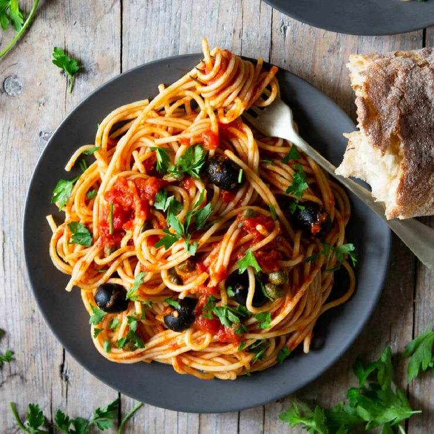

A classic Neapolitan entrée locally known simply as aulive e chiappariell (lit. olives and capers), spaghetti alla puttanesca is a southern Italian pasta dish. With all the tangy ingredients, spaghetti alla puttanesca packs quite an aromatic punch, making southern Italian reds such as Nero d’Avola, Negroamara and Primitivo the perfect accompaniments to this flavorful pasta dish.
Meal prep time : 35 minutes
Servings : 4